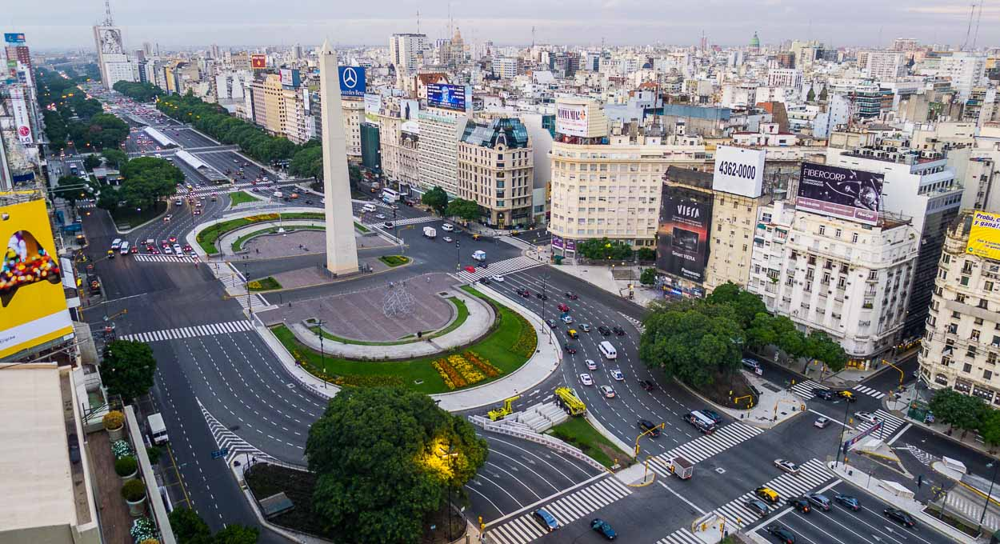

Buenos Aires, Provincia de Buenos Aires, es una de las veintitrés provincias que conforman la republica Argentina , uno de los veinticuatro «estados autogobernados» o jurisdicciones de primer orden que conforman el país y uno de los veinticuatro distritos electorales legislativos nacionales. Su capital es la ciudad de La Plata.
El territorio está en la región este del país; limita al norte con las provincias de Santa Fe y Entre Ríos, al noreste con el Río de la Plata y la Ciudad Autónoma de Buenos Aires, al este y sur con el mar Argentino del océano Atlántico, al suroeste con Río Negro, al oeste con la Provincia de La Pampa y al noroeste con la Provincia de Córdoba.
Con 15 625 084 habitantes, según el censo de 2010, es la jurisdicción de primer orden y la provincia más poblada. De esos 15 625 084 habitantes, 11 928 986 viven en la parte de la región metropolitana que políticamente pertenece a la Provincia de Buenos Aires y que rodea a la vecina Ciudad autónoma de Buenos Aires, alrededor de la cual gira la vida socio-cultural del día a día. En dicha región se encuentra incluida La Plata (que es la capital provincial) y sus alrededores, que como “Gran La Plata” cuenta con 787 294 habitantes según el último Censo Nacional de 2010. Fuera de la región metropolitana de Buenos Aires, en el llamado interior bonaerense, que es más o menos todo lo que se encuentra fuera del semicírculo formado por la Ruta Provincial 6, hay 3 696 098 de habitantes. A su vez, sus 307 571 km2 hacen que la Provincia de Buenos Aires sea la segunda jurisdicción de primer orden más extensa, por detrás de la de Tierra del Fuego, Antártida e Islas del Atlántico Sur, que cuenta con 1 002 445 km2 (incluyendo territorios en litigio).
Considerando los datos anteriores, con sus 50.8 hab/km2 esta es la tercera jurisdicción de primer orden más densamente poblada, solo por detrás de la Ciudad Autónoma de Buenos Aires y la Provincia de Tucumán. Ahora bien, esta provincia presenta dos realidades demográficas, poblacionales y socioculturales muy distintas y es la siguiente: en la parte de la región metropolitana (excluyendo la porción administrada por la ciudad de Buenos Aires de la misma región) hay una densidad de población de 867,9 hab/km2; mientras que en el territorio comprendido por los municipios del interior bonaerense la densidad de población es de 12,5 hab/km2.
La historia de la provincia de Buenos Aires empieza cuando el Río de la Plata fue descubierto por la expedición del español Juan Díaz de Solís, quien buscaba un paHasta la actualidadentino, pero murió en un ataque de los indígenas, y los restantes tripulantes regresaron a España. Mientras por un lado Fernando de Magallanes continuaba la búsqueda del paso que llevara a los navegantes europeos hacia las Indias Orientales, (el cual encontró al cruzar el estrecho de Magallanes), el primer adelantado Pedro de Mendoza fundó el puerto de «Nuestra Señora María del Buen Aire» el 2 de febrero de 1536. La ciudad fue sitiada y asaltada por los querandíes, y en 1541 fue abandonada por los españoles, quienes trasladaron a sus habitantes a Asunción del Paraguay. Mismo así, el lugar seguía teniendo una ventaja estratégica para los españoles, que desde ahí podían comerciar con España y preparar la expansión hacia el sur del continente. Por esto, Juan de Garay refundó la ciudad el 11 de junio de 1580, esta vez bajo el nombre de «Ciudad de la Santísima Trinidad del puerto de Santa María de los Buenos Aires». Esta se convirtió más adelante en la capital de la gobernación del mismo nombre y en 1776, en la del nuevo Virreinato del Río de la Plata.
Posteriormente, Garay comenzó a recorrer el territorio inexplorado, pasando por Tuyú, Tordillo y Kakel Huincul, llegado hasta el cabo Corrientes. Juan de Garay repartió entre sus acompañantes las tierras que se fueron descubriendo, situando las estancias destinadas a la cría de ganado junto al Río de la Plata. La estancia «vaquería» fue sometida al régimen de encomienda y condensó la actividad agropecuaria de la provincia, principal ocupación económica de la población española. La misma también se convirtió en fortín para mantener a raya los ataques de la población indígena local. Desde la ciudad de Buenos Aires se abrieron rutas hacia otras ciudades del Virreinato, y junto a ellas se establecieron otras como Baradero, Luján, Quilmes y San Andrés de Giles. La estancia aumentó su importancia al establecerse la industria del saladero, la exportación, y el prestigio de la lana local en Europa.
La Revolución de Mayo de 1810, que desalojó del gobierno al virrey del Virreinato Río de la Plata, Baltasar Hidalgo de Cisneros, abrió interesantes perspectivas para la ganadería, ya que no implicó solamente el fin del monopolio español del comercio exterior sino también la introducción de sistemas y mejoras en la actividad desarrollados en otros países y de otras razas de ganado. La incorporación del alambrado permitió definir la propiedad de la tierra trazando límites claros, que hasta entonces eran vagos e imprecisos.
El 11 de febrero de 1820, a consecuencia de la Anarquía del Apoderejecutivoritorios asignados a Entre Ríos y Corrientes, creadas en 1814, y de Santa Fe, de 1815.
Pero el territorio bajo control efectivo era muy limitado: desde la ciudad de Buenos Aires hasta unos 60 km a la redonda. Los amerindios se resistían tenazmente a la penetración del hombre blanco en las tierras que habitaban. La introducción al continente americano del caballo durante la primera fundación de la ciudad y la habilidad de los aborígenes para domesticar a los que se habían vuelto cimarrones, les permitió lanzar violentos ataques llamados «malones». Sucesivos gobiernos bonaerenses intentarían, por un lado, frenar los malones, y por otro, controlar territorios mediante diversas operaciones: la construcción de fortines defensivos, la realización de expediciones punitivas, la Zanja de Alsina, etc. En 1823 la primera ciudad que había sido fundada en la época patria, Dolores, un malón la destruyó por completo, lo cual aumentó la preocupación de los pobladores respecto de los grupos aborígenes y la frontera con sus territorios.
El gobernador Martín Rodríguez dictó la ley de supresión de los cabildos de origen hispánico y creó la justicia de paz el 22 de enero de 1822. Fueron nombrados veintiocho jueces de paz de campaña, uno para cada partido. Durante su gobierno, los estancieros se expandieron hacia el sur, hasta el río Quequén Grande, apoyados por algunas expediciones militares.
Lo sucedió Juan Gregorio de Las Heras, que reunió el Congreso General de 1824, por el cual se pretendió unificar el país. En 1826, el Congreso nombró presidente de las Provincias Unidas del Río de la Plata a Bernardino Rivadavia, de tendencia centralista, que presentó al Congreso un proyecto de ley mediante el cual la Ciudad de Buenos Aires y gran parte de la campaña circundante se proclamaba capital del Estado y se dividía el resto de la provincia en dos. El proyecto fue sancionado ese mismo año a pesar de las fuertes resistencias que generó en el federalismo porteño. El gobernador de la provincia, Las Heras, cesó en su cargo por decreto del Poder Ejecutivo. La Junta de Representantes fue disuelta, y se nacionalizaron el ejército de la provincia, las tierras públicas, la aduana y todas las propiedades provinciales.
La Guerra del Brasil y la Constitución unitaria de 1826, rechazada en el interior del país, terminaron con la caída de Rivadavia. En su lugar asumió como gobernador Manuel Dorrego, partidario del federalismo, quien fue fusilado por Juan Lavalle. La situación terminó con el régimen presidencial y reanudó la guerra civil entre unitarios y federales.
En 1829, Juan Manuel de Rosas, tras derrotar a Lavalle, asumió el gobierno de la provincia con "Facultades Extraordinarias", y conservando la delegación de las relaciones exteriores por parte de las demás provincias. Lo sucedieron tres gobernadores entre 1832 y 1835, año en el que fue nuevamente elegido gobernador de Buenos Aires, con el agregado de tener la "Suma del Poder Público" —los tres poderes del estado resumidos en su persona—.
Durante el gobierno de Rosas, Buenos Aires logró la supremacía sobre las demás provincias, sin que por eso se lograra la unificación del país.Después de su caída ante el Ejército Grande de Justo José de Urquiza en la Batalla de Caseros, el 3 de febrero de 1852, se estuvo cerca de este objetivo, con la Constitución de 1853, pero esta fue rechazada por la Provincia de Buenos Aires. El reparto de los réditos generados por el puerto y la aduana de la ciudad de Buenos Aires fueron las principales objeciones. La Provincia, luego de la revolución del 11 de septiembre de 1852 se separó de la Confederación Argentina, actuando como un estado independiente, el Estado de Buenos Aires, hasta después de la Batalla de Pavón. Solamente se incorporará a la Argentina en 1862, bajo la presidencia de Bartolomé Mitre.
La constitución provincial promulgada en abril de 1854 establecía los siguientes límites para la provincia:
El acuerdo entre los mitristas y los políticos del interior del país permitió finalmente la declaración de la Ciudad de Buenos Aires como capital del país, pero el acuerdo era demasiado beneficioso para la Provincia de Buenos Aires, lo que provocó nuevos enfrentamientos.
La calma llegaría recién en 1880, luego de que el presidente Nicolás Avellaneda derrotara a las tropas del gobernador Carlos Tejedor y lograra así la Federalización de Buenos Aires, ciudad que se convirtió en sede del gobierno federal. Esto obligó a designar una nueva capital, creándose la ciudad de La Plata, obra del gobernador Dardo Rocha. La Plata proclamada el 1 de mayo de 1882 y fundada el 19 de noviembre del mismo año.
Entre 1876 y 1877 se construyó un sistema de fosas y fortificaciones en el centro y sur de la Provincia de Buenos Aires, conocida como la Zanja de Alsina; cuya función fue la de entorpecer el paso del ganado que era robado por grupos indígenas.
Luego en 1879, el Ejército Argentino, bajo el mando del general Julio Argentino Roca, lanzó la "Conquista del desierto" para exterminar a los indígenas. Esta produjo el sometimiento de las poblaciones mapuches, tehuelches y ranqueles existentes en la zona, con el consecuente ensanche de la provincia hacia el oeste y el sur. Sin embargo, las poblaciones indígenas subsisten hasta hoy y Buenos Aires es la provincia con mayor cantidad de población originaria según el censo de 2010. Las comunidades indígenas dejaron de ser entidades políticas y culturalmente autónomas.
En 1884, se crearon territorios nacionales en La Pampa, Neuquén, Chubut, Santa Cruz y Tierra del Fuego, desconociendo la pretensión de Buenos Aires. El límite oeste de la provincia quedó aproximadamente adonde había llegado la línea de fortines pocos años antes de la Campaña al Desierto. Los avances logrados en esta pasaron casi por completo a formar los Territorios Nacionales. En ese mismo año, los municipios de Belgrano y San José de Flores pasaron a formar parte de la Capital Federal.
Entre 1890 y 1930 surgieron nuevas fuerzas políticas, principalmente la que acabaría siendo la actual Unión Cívica Radical que, bajo el liderazgo de Leandro N. Alem, se enfrentó a las estructuras de poder heredadas del roquismo. La industria provincial tuvo un gran impulso con el florecimiento del ferrocarril. En 1886 se promulgó a Ley orgánica de las municipalidades, que fortaleció a los municipios y aumentó su autonomía administrativa. Luego de la finalización de la Campaña del Desierto se crearon muchos nuevos partidos en las tierras ganadas al indio.
A principios de la década de 1930 comenzó una etapa de la historia nacional conocida como la Década Infame. Hubo períodos de crisis en los que tuvieron lugar la devaluación del peso y cesantías masivas, pero uno de los factores que más afectó a la economía provincial fue el Pacto Roca-Runciman que colocó a la industria de la carne y sus derivados bajo un fuerte control inglés, en diversas facetas como los precios o el transporte.
Durante los gobiernos de la Revolución del 43 y los mandatos de Juan Domingo Perón tuvo lugar un fuerte proceso de migración interna, en el cual gran parte de la población rural se movió a las ciudades. Esto se notó especialmente en la ciudad de Buenos Aires, que aumentó su población tanto dentro de sus límites administrativos como en los partidos de la provincia lindantes con la misma, lo cual llevó a la conformación de la megaciudad conocida como Gran Buenos Aires. Carlos Aloé fue elegido para ese cargo en las elecciones de 1951, asumiendo el 4 de junio de 1952. En el sistema eléctrico de la zona Norte, inauguró la ampliación de la Central Regional de Chivilcoy, inauguró la línea de Alta Tensión Luján-Morón, importante obra que había estado paralizada tres años. El sistema eléctrico de la zona Oeste, constituido por una central con tres grupos electrógenos, fue inaugurado en agosto de 1954 en Pehuajó.
En el de la zona Sudeste, abastecido por la gran central regional de Necochea, la gestión procedió a terminar el edificio de la misma y al montaje de sus instalaciones. En el del Sur, principalmente mejoró la red de distribución de la ciudad de Bahía Blanca, y en el del Este, Chascomús-Dolores, también se programaron y se pusieron en ejecución el tendido de 900 km de líneas de Alta Tensión, entre ellas la de Mar del Plata-Necochea. El incremento de la potencia instalada de 118 000 kW a 190 000 permitió ampliar la producción de energía.En esas épocas aumentó también la industrialización, en detrimento del campo. Se tendió el gasoducto Comodoro Rivadavia-Buenos Aires, se pavimentaron varias ciudades del interior, se amplió la red vial y se trazaron las rutas 2 y 3 y se fortaleció la infraestructura educativa.
La etapa entre 1955 y 1983 tuvo a nivel nacional una alta inestabilidad política, en la cual cerca de 25 gobernantes de diversas extracciones ocuparon el poder ejecutivo. Una situación similar tenía lugar en la provincia, que en dicho período tuvo a más de 40 gobernadores.
La Reforma de la Constitución Argentina de 1994 introdujo el sistema de elección directa para los cargos de presidente y vicepresidente nacional, anulando el uso del colegio electoral. Esto aumentó la importancia política de la provincia, que con su alta población respecto del resto del país se volvió determinante en la mayoría de los resultados electorales posteriores. No obstante esta significativa influencia electoral, desde la fundación de La Plata hasta el presente, ninguna persona que haya ostentado el Poder Ejecutivo en Casa de Gobierno de la Provincia de Buenos Aires en La Plata ha llegado a ser Presidente de la Nación por medio del voto (situación conocida como la "maldición de Alsina"). Los dos casos que formalmente sí han llegado a ser presidentes de la Nación luego de haber sido formalmente Gobernadores de Buenos Aires son Bartolomé Mitre (caso anterior a la fundación de La Plata, gobernación ejercida con capital en Buenos Aires con ambos distritos todavía fusionados) y Eduardo Duhalde (que es posterior a la fundación de La Plata, pero fue designado presidente por la Asamblea Legislativa bicameral del Congreso Nacional).
En las Elecciones Generales en la Provincia de Buenos Aires de 2015, la candidata por el frente Cambiemos, María Eugenia Vidal, se impuso con el 39.49 % de los votos al candidato del Frente Para la Victoria, Aníbal Fernández, quién obtuvo el 35.18 % de los sufragios válidos. De esta manera, Vidal rompió 28 años de hegemonía del Partido Justicialista al mando de la provincia bonaerense y siendo la primera mujer en gobernar la provincia más grande del país (de 152 gobernadores de la intendencia de Buenos Aires, Gobernadores y encargados del Poder Ejecutivo de la Provincia de Buenos Aires, Gobernadores del Estado de Buenos Aires y Gobernadores de la Provincia de Buenos Aires - entre ellos interventores, de facto e interinos-).
En las Elecciones provinciales de Buenos Aires de 2019, el candidato Axel Kicillof del Frente de Todos fue elegido gobernador con el 52.40 % de los votos contra el 38.28 % de la candidata de Juntos por el Cambio, María Eugenia Vidal, quien iba por la reelección. María Eugenia Vidal se convirtió en la primera gobernadora de la historia de la democracia que no consigue la reelección.
Con la Provincia de Córdoba los límites están dados por el paralelo 34º23' S hasta 34°23′S 63°23′O, luego por el meridiano 63º23' O.
El límite con la Provincia de La Pampa es en su totalidad el meridiano 63º23' O (en 1884 llamado "meridiano 5º de Buenos Aires", tomando como meridiano 0° al del observatorio de la ciudad de La Plata).
En cuanto a la Provincia de Río Negro, el límite es el meridiano 63º23' O entre los ríos Colorado y el río Negro, y por la vaguada de este río, desde el citado meridiano hasta su desembocadura en el mar Argentino.
Casi la totalidad de la frontera oriental de la Provincia de Buenos Aires es el sector del océano Atlántico llamado mar Argentino, sobre el cual tiene aproximadamente 1220 km de costas.
Los límites nororientales con Uruguay en el Río de la Plata están determinados por una poligonal geodésica que aproximadamente se corresponde con la zona más profunda del río en su tercio superior, el tercio medio corre próximo a la costa argentina, y en el inferior discurre por la línea media del curso, por lo que en la desembocadura del río en el mar el límite pasa por el punto equidistante entre el cabo San Antonio (en Buenos Aires) y Punta del Este (en Uruguay). Una singularidad es la isla Martín García, que pertenece a Buenos Aires, se ubica como un exclave por estar rodeada de aguas de jurisdicción uruguaya.
Por último, con la Provincia de Entre Ríos el límite está señalado por la vaguada o talweg del río Paraná, en el sector del delta inferior se usa como límite el brazo más ancho de este río llamado Paraná Guazú hasta su confluencia con el Río de la Plata.
Con la Ciudad Autónoma de Buenos Aires la mayor parte de los límites son artificiales, determinados por una línea poligonal sobre la que se estableció —en su totalidad del lado porteño— la traza de la Avenida General Paz. Únicamente el límite sur de la ciudad es natural, determinado dado por la vaguada del Riachuelo (llamado en la provincia Río de la Matanza), pero todavía en este curso de agua los límites son casi en su totalidad artificiales ya que durante el siglo XX la mayor parte del Riachuelo fue rectificada.
La provincia de Buenos Aires es, al igual que las demás provincias argentinas, autónoma respecto del gobierno nacional en la mayoría de los temas, exceptuando aquellos de alcance federal. Esto está reconocido por el artículo 121 de la Constitución de la Nación Argentina:
La provincia tiene su propia Constitución Provincial. La primera se redactó en 1854 y reformó en 1868. Una nueva Constitución se dictó en 1873, con reformas tratadas en la convención que sesionó entre 1862 y 1889. La Constitución Provincial vigente se remonta a 1934, con las reformas de 1994.
Las autoridades del gobierno tienen su sede en la ciudad de La Plata, la cual es la capital provincial.
El poder ejecutivo poder ejecutivoprovincial es ejercido por un ciudadano bonaerense que ostenta el cargo de gobernador. De acuerdo al artículo 122 de la constitución provincial, el gobernador y el vicegobernador ejercen mandatos de cuatro años. Según el artículo 123, pueden ser reelectos por períodos consecutivos una única vez.El poder ejecutivo provincial es ejercido por un ciudadano bonaerense que ostenta el cargo de gobernador. De acuerdo al artículo 122 de la constitución provincial, el gobernador y el vicegobernador ejercen mandatos de cuatro años. Según el artículo 123, pueden ser reelectos por períodos consecutivos una única vez.
El poder legislativo provincial tiene un sistema bicameral de representación proporcional del las secciones electorales. Su función es emitir leyes sobre temas locales, pero las principales leyes comunes (civiles, comerciales, penales, laborales, de seguridad social y de minería) están reservadas al Congreso Nacional.
La Cámara de Senadores de la Provincia de Buenos Aires está compuesta por 46 senadores, cuyos cargos tienen una duración de cuatro años. La cámara se renueva por mitades cada dos años. Es presidida por el Vicegobernador de la provincia, quien tiene derecho a voto únicamente en caso de empate. Puede acordar el nombramiento de jueces o altos funcionarios, así como también interpelarlos o juzgarlos políticamente si son acusados por la cámara de diputados.
La Cámara de Diputados de la Provincia de Buenos Aires está compuesta por 92 diputados, cuyos cargos tienen una duración de cuatro años, al igual que la Cámara de Senadores se renueva por mitades cada dos años.
El Poder Judicial de la provincia es desempeñado por la Suprema Corte de Justicia de la Provincia de
La presidencia de la Suprema Corte se rota en forma anual entre los distintos miembros de la misma. Los jueces de la Suprema Corte de Justicia, el procurador y el subprocurador general son nombrados por el poder ejecutivo con acuerdo del Senado, mientras que los demás jueces e integrantes del Ministerio Público son nombrados por el Consejo de la Magistratura, también con acuerdo del Senado. Uno de los departamentos más antiguos es el de Dolores en el cual sus tribunales fue declarado monumento histórico municipal.
Los campos son utilizados para la agricultura y la ganadería. Sus producciones más importantes por el lado de la agricultura son el trigo, el maíz, el girasol y la soja, mientras que la ganadería se especializa en los bovinos. Tradicionalmente, la ganadería ocupaba mucho más espacio que la agricultura en la provincia; sin embargo, esta situación se ha equilibrado desde la década de 1990, con la extensión de nuevos cultivos, especialmente la soja, y de nuevas técnicas agrícolas como la "siembra directa". Fuera de los cultivos de granos, también se cultivan frutales, papa y hortalizas; estas últimas se concentran en la zona más cercana a la Ciudad de Buenos Aires. En Médanos, a 39º de latitud sur y a 40 km de Bahía Blanca, se producen vinos de alta calidad; este territorio está ubicado al este de las regiones vitivinícolas tradicionales y produce malbec, cabernet sauvignon, tannat, chardonnay y sauvignon blanc.
Con el desarrollo industrial suscitado tras la crisis de 1930, la provincia fue la receptora mayoritaria de los nuevos establecimientos industriales. A partir de 1960, Avellaneda, La Matanza, La Plata y sus alrededores, Mar del Plata, Bahía Blanca (donde está el mayor polo petroquímico del país), San Nicolás y Zárate - Campana (ambas áreas básicamente con siderurgia) se industrializaron aceleradamente. En Mar del Plata y Necochea se desarrolla una importante flota e industria pesquera.
La provincia tiene el mayor número de establecimientos industriales del país.
El PBI de la provincia es de 570.564570.564 millones de dólares algo así como el 67.5 % del PBI de Argentina. El crecimiento es del 12.3% encima de la media de Argentina.
Otra importante fuente de ingresos es el turismo, al disponer de numerosos partidos junto a la costa con grandes zonas de playas, siendo Mar del Plata la ciudad turística más importante. La actividad turística aumentó luego de la crisis económica del 2001, ya que para las clases media y alta era menos viable veranear en el exterior del país por el aumento del valor del dólar.
La Provincia de Buenos Aires comparte el nombre con su vecina Ciudad Autónoma de Buenos Aires (que fue su capital provincial hasta su federalización en 1880), momento cuando fue totalmente separada de la provincia y pasó a ser "Capital Federal", un municipio especial totalmente dependiente del gobierno nacional argentino. En 1996 la Capital Federal se convierte en una ciudad autónoma, teniendo en la actualidad un rango equivalente al de cualquiera de las 23 provincias. De esta forma, la Ciudad Autónoma de Buenos Aires es coigual a las provincias y, por tanto, es una de las 24 jurisdicciones de primer orden que componen Argentina.
Por eso, se recurren a diversas denominaciones alternativas para diferenciar apropiadamente a ambas. Dichas costumbres no se aplican solamente a la provincia en su totalidad, sino también al Gran Buenos Aires o, un poco más extenso, el área metropolitana de Buenos Aires; es decir, la extensión urbana que rodea a la ciudad mencionada. El sistema más utilizado es nombrar a la ciudad autónoma como CABA "Capital Federal" o "Ciudad de Buenos Aires".
El Gobierno de Argentina ha dado en su página web oficial una definición exacta de lo que es el AMBA y aquellos territorios que lo componen. El AMBA abarca total o parcialmente lo siguiente: - La Ciudad Autónoma de Buenos Aires - 40 partidos-municipios bonaerenses cercanos, cuya población y superficie integran total o parcialmente el área metropolitana:
Almirante Brown
Avellaneda
Berazategui
Berisso
Brandsen
Campana
Cañuelas
Ensenada
Escobar
Esteban Echeverría
Exaltación de la Cruz
Ezeiza
Florencio Varela
General Las Heras
General Rodríguez
General San Martín
Hurlingham
Ituzaingó
Malvinas Argentinas
Marcos Paz
Merlo
Moreno
Morón
Pilar
Presidente Perón
Quilmes
San Fernando
San Isidro
San Miguel
San Vicente
Tigre
Tres de Febrero
Vicente López
Zárate